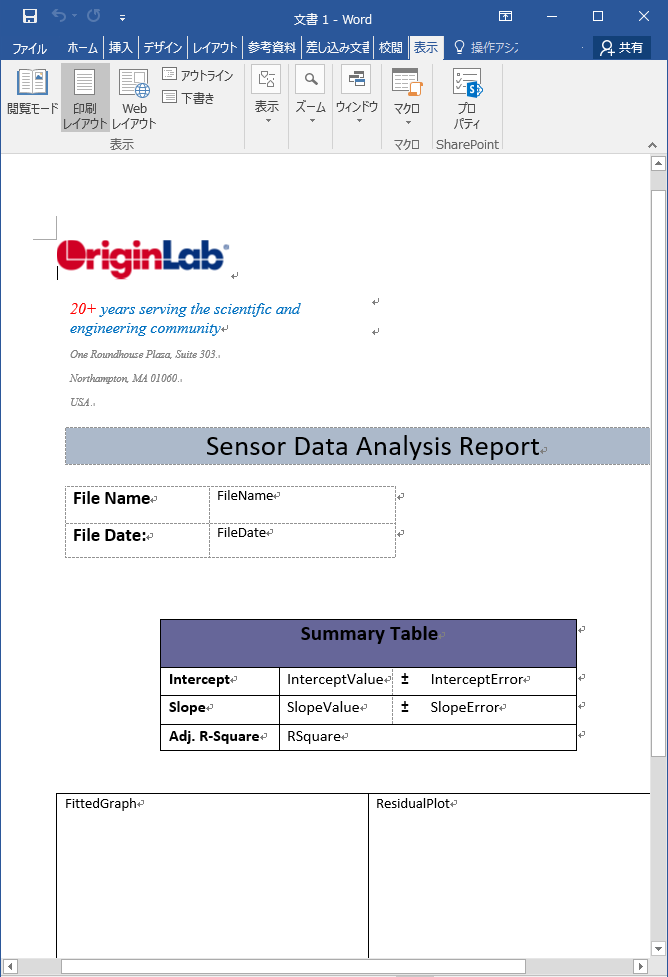
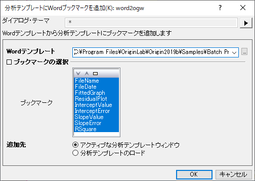
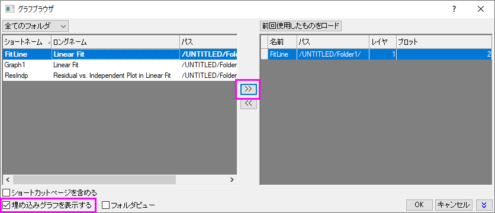
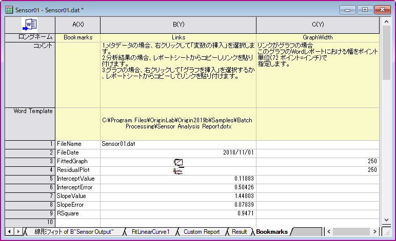
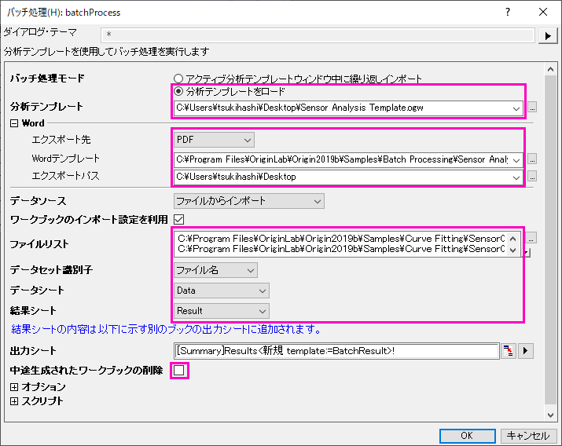
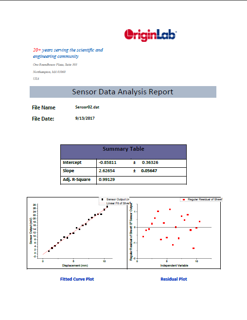

レポート用Wordテンプレートでのバッチ処理
BatchProcess-WordTemplate
サマリー
Originは複数ファイルのバッチ分析を実行することが出来、外部のレポート用Wordテンプレートにセルをリンクさせて分析結果を出力することが出来ます。
必要なOriginのバージョン:Origin 2016 SR0
学習する項目
このチュートリアルでは、以下の項目について解説します:
- Wordテンプレートからのブックマークを分析テンプレートに追加する
- Wordテンプレートのブックマークされたセルに分析結果をリンクさせ、出力するグラフのサイズを調整する
- 一度計算した結果をレポートのため、ワードテンプレートに送る
- 複数ファイルのバッチ分析を行い、WordまたはPDFファイルに結果を出力する
ステップ
このチュートリアルでは、<Origin EXE folder>\Samples\Batch Processing\ フォルダにある、作成済のSensor Analysis Report.dotx を使います。Wordテンプレートでブックマークラベルを確認するには、ファイルを開いた後、メニューのファイル：オプション からWordのオプション ダイアログを開きます。左側パネルにある詳細設定を選択し、右側パネルで構成内容の表示のセクションまでスクロールして、ブックマークを表示するにチェックを入れます。
- 
分析テンプレートにWordブックマークを追加
- Originを起動します。ファイル：開くを選択し、<Origin EXE>\Samples\Batch Processing\ フォルダを検索し、Sensor Analysis.ogw を選択します。
- ワークシート Dataをアクティブにし、
 のボタンをクリックします。<Origin EXE folder>\Samples\Curve Fitting\ フォルダを検索し、Sensor01.dat を選択して、分析用のデータをインポートします。
のボタンをクリックします。<Origin EXE folder>\Samples\Curve Fitting\ フォルダを検索し、Sensor01.dat を選択して、分析用のデータをインポートします。
- メニューからファイル：分析テンプレートにWordブックマークを追加する...を選択し、ダイアログを開きます。Wordテンプレートボックスの右側にある、
 ボタンをクリックし、<Origin EXE folder>\Samples\Batch Processing\ フォルダを参照し、Sensor Analysis Report.dotxを選択します。
ボタンをクリックし、<Origin EXE folder>\Samples\Batch Processing\ フォルダを参照し、Sensor Analysis Report.dotxを選択します。
- ブックマークの選択 下のブックマーク リストにある全てのブックマークエントリーを選択し、OKをクリックします。アクティブな分析テンプレートにそれらのBookmarksシートが追加されます。
- 
Wordテンプレートに分析結果をリンク
- Bookmarksタブをクリックします。
- Linksの列のFilename ブックマークの右側のセルで右クリックし、 変数の挿入を選択します。
- 表示されたダイアログで、情報タブをクリックし、SYSTEM.IMPORTのツリーノードにある、FILENAMEを選択します。挿入ボタンをクリックし、ファイル名をワークシートセルに挿入します。
- FileDate横のセルを右クリックし、変数の挿入を再選択します。SYSTEM.IMPORTのツリーノードを展開してFILEDATEを強調表示し、挿入ボタンをクリックして、ワークシートのセルにファイルの日付を挿入します。挿入される値はユリウス日値となり、Originが日時データを保存するために使用する数値です。表示を通常の日付にするには、セル上で右クリックし、セルのフォーマットを選択します。
- フォーマットのドロップダウンリストから日付を選択し、OKボタンをクリックしてダイアログを閉じます。
- FittedGraphセルの横のセルを右クリックし、グラフを挿入を選択します。表示されたダイアログで、グラフボックスの右にあるブラウザボタン をクリックし、グラフブラウザのダイアログを開きます。左側パネルの左下にある埋め込みグラフを表示するにチェックを入れ、埋め込みグラフを表示します。FitLineグラフを選択して矢印ボタンをクリックし、右側のパネルに追加します。OKボタンを2回クリックし、ブックマークワークシートにグラフを挿入します。右側のGraphWidth列に250（単位=ポイントサイズ）を入力して、Wordレポートに出力されるグラフのサイズを指定します。

- ResidualPlot行についても同様の手順を行います。
- パラメーター値に関係しているブックマークには、FitLinear1レポートシートから値をリンクとしてコピー＆ペーストすることが出来ます。これを行うには、まず、FitLinear1レポートシートをクリックしてパラメーター表を選択します。切片の値に対応するデータセルをクリックして、右クリックしてコピーを選択します。ブックマーク のシートに戻り、InterceptValue のセルの上で右クリックし、リンクを貼り付けを選択し、レポートシートの値とWordテンプレートの間にリンクを構築します。
- 残る他のLinks列のセルにも、コピー＆ペーストを繰り返します。（RSquareは、統計表の補正R二乗の値を使います。）操作が完了したら、ワークシートを分析テンプレートとして保存する を選択し、Sensor Analysis Template.ogwまたは.ogwuを分析テンプレートとして保存します。

 | 以前のチュートリアル "カスタムレポートの作成" のステップに従って、対象のセルに、結果をコピー＆ペーストする方法を確認することが出来ます。
|
一度計算した結果をワードテンプレートに送り、ワードのレポートを作成
データファイルを解析して、即座にWordのレポートを作成したい場合があります。上記の例から引き続いて、Bookmarksワークシートのように、全ての結果をWordブックマークにリンクさせて、アクティブなシートから一時的なWordレポートを作成することが出来ます。これは、ワークシートの左上にある、Wordに出力ボタン をクリックするだけで作成できます。
さらに、エクスポートパス ダイアログでWordレポートをどこに出力するかを設定できます。
バッチ処理及びWordとPDFファイルに結果を出力
| Origin 2020から、PDF及びMS Wordレポートを単一のマルチページファイルをして出力することができます。これを行うには、バッチ処理の前にマルチページファイルとしてエクスポートのボックスにチェックをします。
|
- 新規プロジェクトを開始します。
- バッチ処理ボタン
 をクリックします。
をクリックします。
- バッチ処理モードで、分析テンプレートをロードが選択されていることを確認してください。分析テンプレートのドロップダウンリストから、前に作成したSensor Analysis Template.ogw(u)を選択します。（リストの右側にあるボタンをクリックして、作成したフォルダを検索する必要があるかも知れません）
- 出力先のドロップダウンリストからPDFを選択し、PDFとして出力する設定にします。
- Wordテンプレートボックスの右側にある、 ボタンをクリックし、<Origin EXE folder>\Samples\Batch Processing\ フォルダを参照し、Sensor Analysis Report.dotxを選択します。
- エクスポートパスの右側にあるブラウザボタン をクリックして、違うパスに出力することもできます。
- ファイルリストの右側にあるブラウザボタンをクリックして、<Origin EXE Folder>\Samples\Curve Fittingフォルダから、すべてのSensor0#.datを選択します。
- ファイルの追加をクリックし、OKをクリックします。
- データセット識別子としてファイル名を選択します。
- データシートドロップダウンリストで、Dataが選択されていることを確認します。
- 結果シートドロップダウンリストで、Resultを選択します。
- 中途生成されたワークブックの削除のチェックを外します。
- OK をクリックして、ダイアログボックスを閉じ、インポートします。

| エクスポートされたPDFファイルの保存場所は、メッセージログに表示されます。
|
出力されたPDFのバージョンレポートのサンプルは次の通りです。
